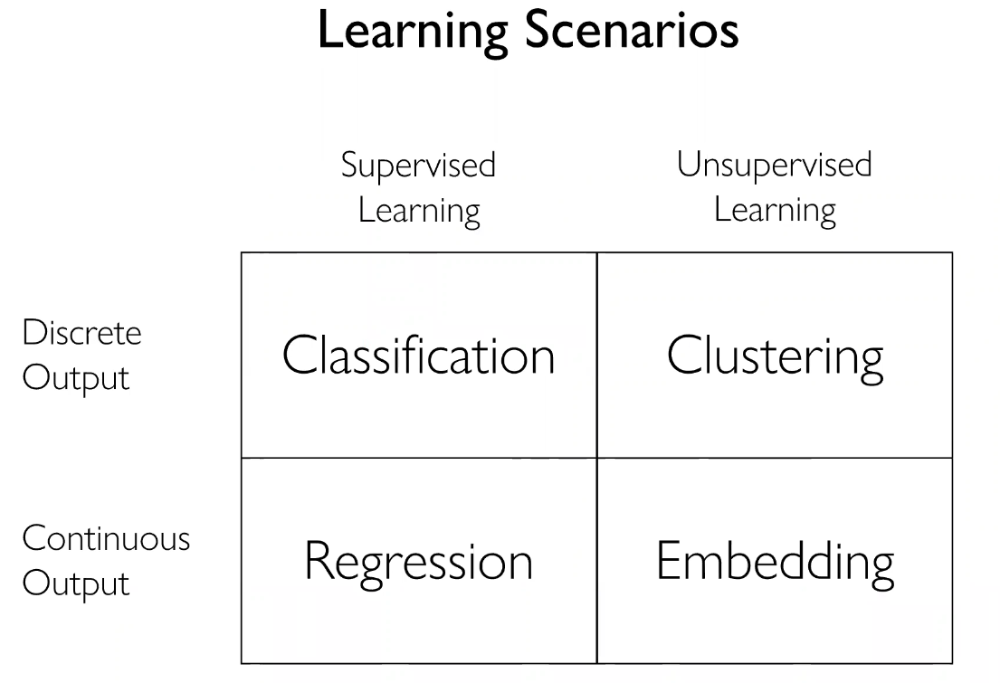
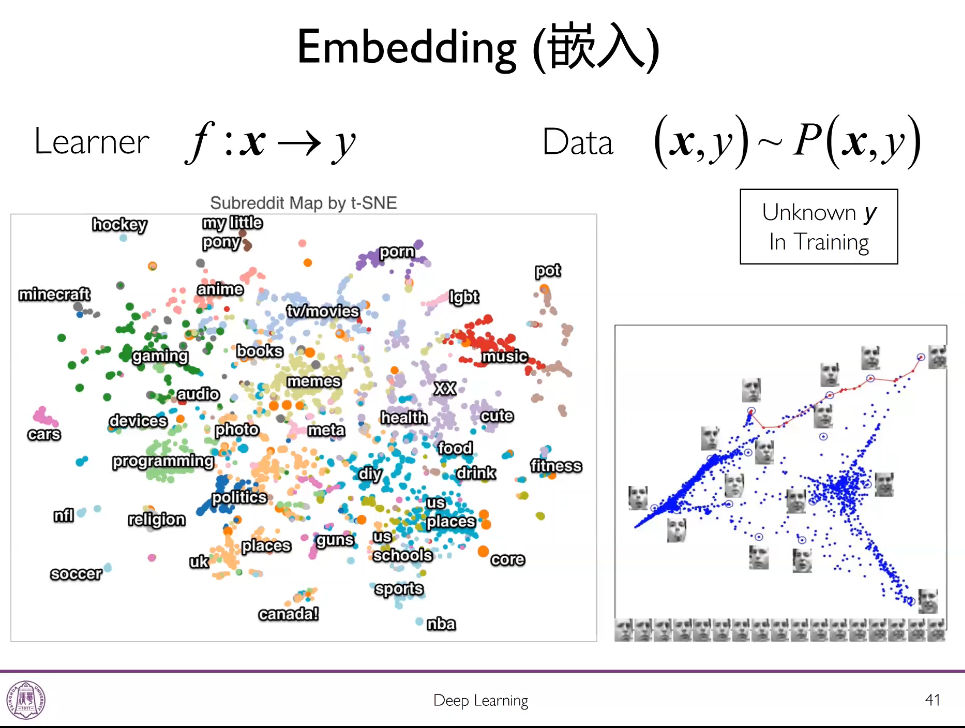
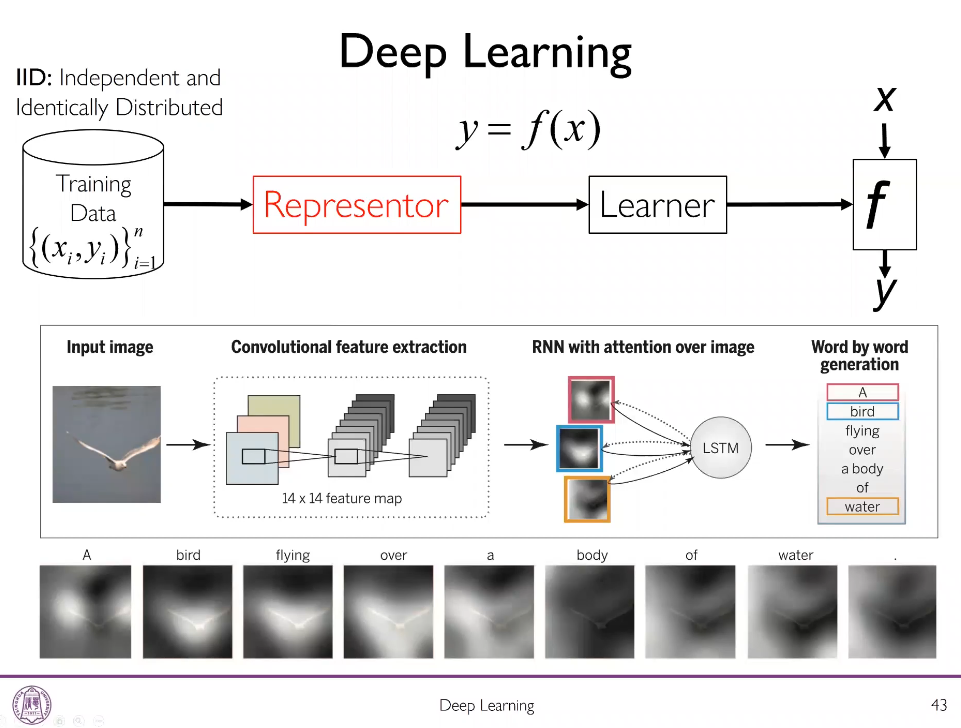
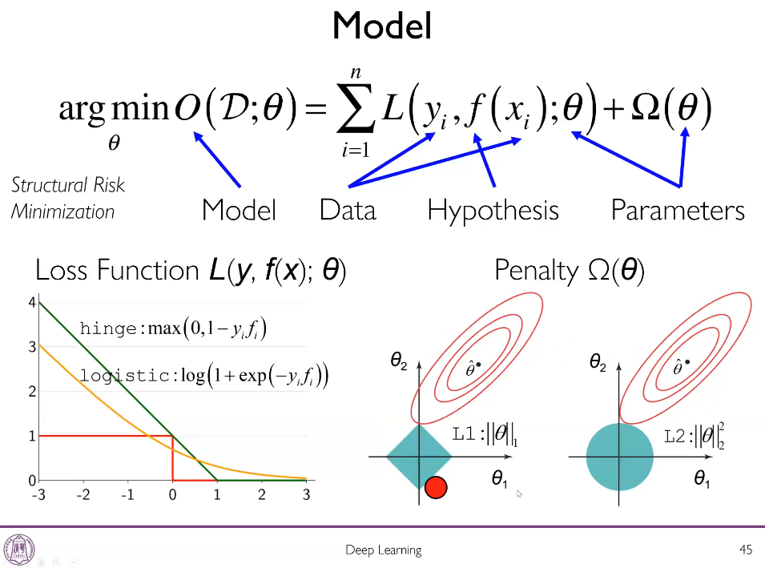
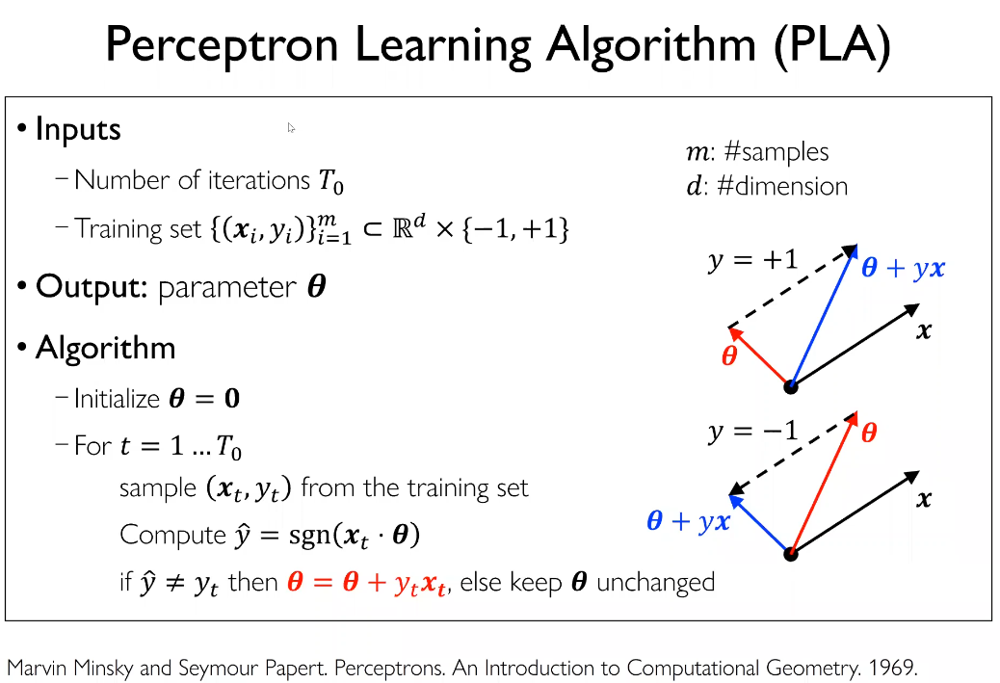

从校内深度学习公开课开始，每天高效地学习与记录吧！
目录
校内深度学习公开课
introduction




- 深度学习的end-to-end：representer和learner可以端到端地学习，见下图。
- 但是也不是说只能端到端，Hinton最早的unsupervised pre-training其实是两阶段的；
- 一些representing learning的算法，效果不一定比深度方法差，端到端可能不一定要做，但是深度学习的常见端到端。

正则项/惩罚项
- 度量假设空间的大小，高次多项式空间比线性空间大；
- 控制模型复杂度。因为机器学习的模型的泛化误差要求，在足够小（简单）的模型上足够大的训练集上训练得到足够小的训练误差，这样的模型才可能是在未知测试数据上效果好（泛化误差小）的模型。

loss function损失函数
0-1损失函数和分类准确率是完全对应的，也即和学习出来模型的评价准则对应；
评价准则：查准率，查全率，ROC等，直接针对它们优化是很困难的。
hinge loss, logistic loss不对应，针对它们的优化和最终用来评价模型的准则并不等价。
linear regression线性回归

- L2损失函数（均方误差）；
- 线性假设空间；
- L2二范数正则项；
- 目标函数有闭式解（正规方程normal equation），但是一般闭式解意味着大规模的计算量，这是我们不期望的。
logistic regression逻辑回归

- logistic损失函数；
- 不能求闭式解，用梯度下降法迭代求解。
softmax regression

logistic 回归的多分类形式；
softmax function：将score变成probability；

交叉熵cross entropy损失函数：预测概率向量和标签（概率）向量的距离。
误差

近似误差：假设空间好不好，近似误差太大可能就需要换一个假设空间更大的模型；
估计误差：估计误差大则说明假设空间可能太大了，否则学习算法在太大的假设空间中可能找不到最优的假设。
深度学习就是要学习feature extraction让假设空间和真实目标函数之间的gap变小。
参数化与非参数化

维度灾难与流形学习

高维空间十分稀疏，在“虫洞”中维度可能低一些；数据在流形行上的维度可能低于输入空间的维度，因此在流形的低维空间上就可能做数据的相似度等建模。
unsupervised representation learning
偏差与方差

泛化

模型选择

不同超参，在训练集上分别训练，在验证集上检验效果，选效果最好的超参。
暴力方法：Auto-ML
多层感知机Multilayer Perceptrons
最早的感知机针对二分类：符号函数作激活函数
迭代$T_0$次，也即更新参数$\le T_0$次：

收敛性：（非线性可分情况下没法证明感知机的线性可分算法。但现实很多不是线性可分，所以只能接受这个假设带来的误差等。）收敛性可以用迭代到多少次就不再需要更新参数来衡量；或者说，当这些迭代中一共出现了多少个错分目标之、且我们针对这些更新了参数之后，就不再需要迭代更新参数了，也就是存在下图中的上界值$\Big(\frac{R}{\gamma}\Big)^2$

收敛性证明：感知器的收敛速度其实比较慢。可以看到，$\gamma$越大，问题越简单，越线性可分，需要迭代的错误样本数$M$的上界越小，迭代越快，收敛越快；而$R$即最远的样本距离越大，而每次更新的步长是固定的，所以表明越难分类，所以需要迭代的错误样本数$M$的上界越大，迭代越慢，收敛越慢。

本质上表达的是线性函数，可以解决与或非，但是单层感知机不能解决异或，通过叠加可以。
MLP(Multilayer Perceptrons) 多层感知机：多个感知机layering在一起可以表达universal approximator任意函数（有条件）。MLP的连接是稀疏的。


上述为布尔函数，感知机也可以表示实函数Real function。

如果感知机的激活函数是符号函数，那么边界其实是不可学习的，因为符号函数没有梯度，不能用基于梯度的反向传播等微积分算法。为了要求可学习，必须要求感知机是可求导的，采用可求导的模型后，可以近似拟合不能精确拟合边界。